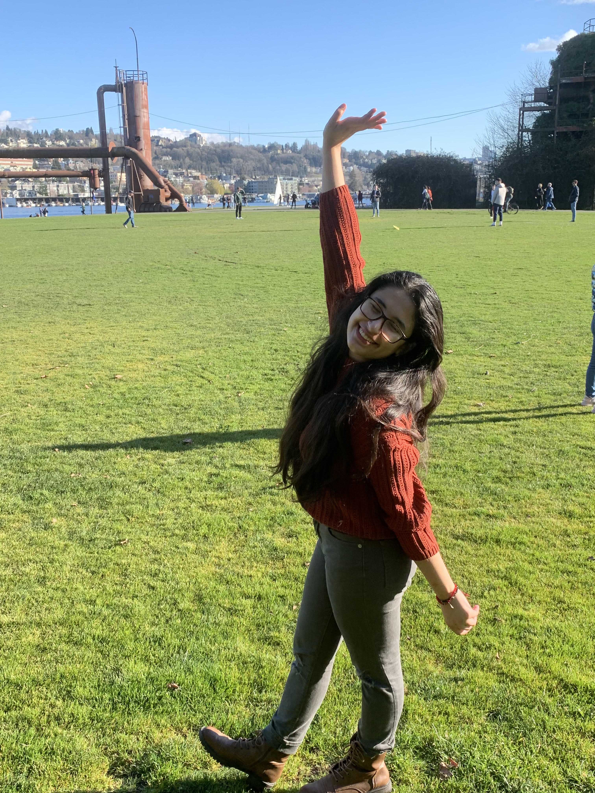

Projects


My name is Katherine and Intending in Majoring in Informatics in a focus in UX/UI design focus or software development. Through my works I have more experience that can be shown shown through design but I'm also experienced in coding through taking the basics of python, java and a bit of python
As you scroll down you can find a few projects that I've been a part of through these past two years